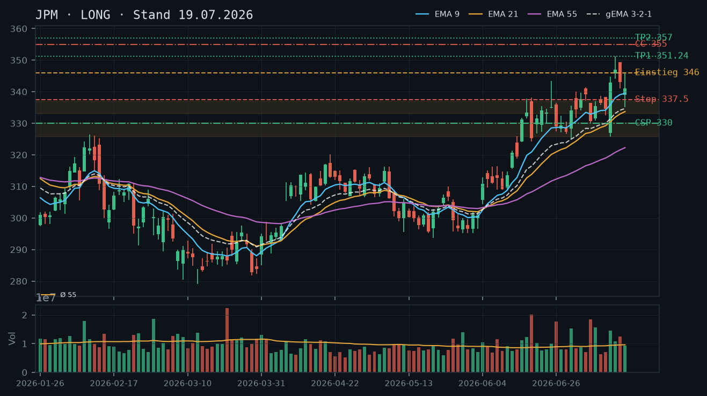
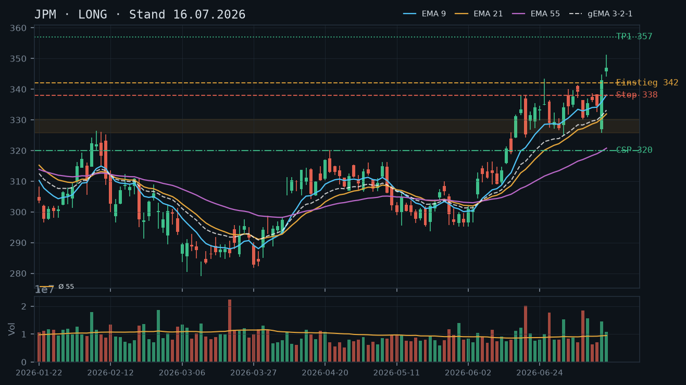
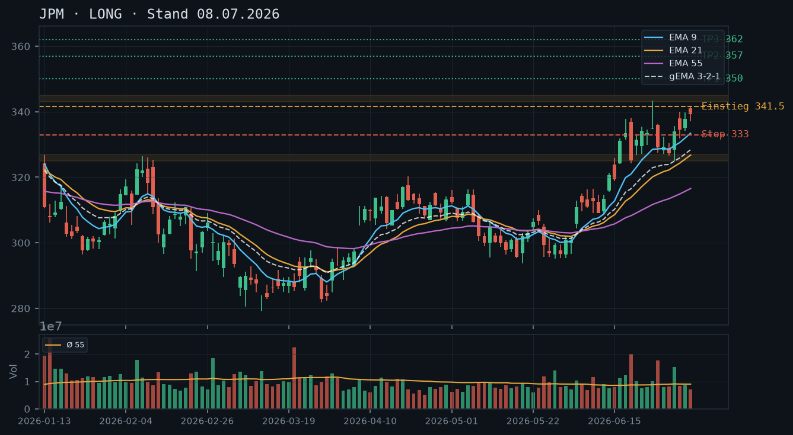

JPM
Analyse-Historie · neueste zuerstJPM testet aktuell zum zweiten Mal das Allzeithoch bei 351,24 nach einer durch die Zone 337,30/338,87 bestätigten Konsolidierung – die bullische EMA-Struktur bleibt intakt, allerdings läuft der aktuelle Anstieg mit unterdurchschnittlichem Volumen, weshalb ein bestätigter Ausbruch abgewartet werden sollte.

1 · Trendstruktur
JPM befindet sich seit dem Tief vom 27.03. bei 281,75 in einem stabilen Aufwärtstrend, der sich seit dem Earnings-Gap vom 14.07. nochmals beschleunigt hat. Am 15.07. wurde mit 351,24 ein neues Allzeithoch erreicht, der Tagesschluss lag jedoch bereits deutlich darunter – kein sauber bestätigter Ausbruch. Die anschließende Konsolidierung fand zweifachen Halt in der Zone 337,30/338,87 (20./21.07.), tiefer abgesichert durch das Tief vom 17.07. bei 335,05. Aktuell (Live-Kurs 349,95) steht der zweite Test des Allzeithochs unmittelbar bevor.
2 · Candlestick-Formationen
Die Kerze vom 21.07. ist eine Hammer-Umkehrformation exakt an der Unterstützung 337,30, gefolgt von einer durchgehend bullischen Fortsetzungskerze am 22.07. (Schluss 348,21 nahe Tageshoch). Auffällig: Beide Anstiegstage laufen mit unterdurchschnittlichem rel_volumen (0,63 bzw. 0,84), während der eigentliche Ausbruchstag 15.07. mit 1,13 und der Verteilungstag 16.07. sogar mit 1,30 liefen – dem aktuellen Comeback fehlt bislang die Volumen-Bestätigung.
3 · EMA-Lage (9 / 21 / 55)
EMA9 (342,08) > EMA21 (336,36) > EMA55 (324,54) – saubere bullische Reihenfolge ohne Kompressions-Artefakte. Der gema_321 steigt stetig (331,38 am 14.07. auf 337,25 am 22.07.). Kurs liegt rund 1,8% über EMA9, nicht überdehnt. EMA21 fällt fast exakt mit der bestätigten Supportzone 337,30/338,87 zusammen – eine relevante Konfluenz.
4 · Trade-Setup
| Richtung | Long |
| Einstieg | 351,50 (Stop-Buy über das Allzeithoch vom 15.07. bei 351,24) |
| Stop | 343,00 (unter dem Tief der Ausbruchskerze vom 22.07. bei 344,25, EMA9 bei 342,08 als tiefere Auffanglinie) |
| Ziel | 367,00 (Verlängerung der Konsolidationsbreite ~16 Punkte über den Ausbruch; Zwischenmarke 357,00 aus der ursprünglichen These vom 08.07.) |
| CRV | 1.8 : 1 |
5 · Stillhalter (max. 12 Tage)
Der Aktienbestand erlaubt einen Covered Call, den wir bewusst weit oberhalb der eigenen Long-Ziele ansetzen, um die laufende Trendbewegung nicht zu kappen. Auf der CSP-Seite bietet die frisch zweifach bestätigte Zone 337,30/338,87 ein solides, wenn auch wegen der Kursnähe etwas engeres Fundament.
| Geschäft | Cash-Secured Put |
| Strike | 335.0 |
| Puffer | 4.3 % |
| Zone | unterhalb der zweifach bestätigten Unterstützung 337,30/338,87 (20./21.07.), verstärkt durch EMA21 bei 336,36 |
| Verfall bis | 2026-07-31 (8 Tage) |
| Begründung | Strike liegt klar unter der jüngsten, zweifach verteidigten Konsolidierungsbasis; die Zone dient als Puffer vor dem Strike. Andienung bei 335,00 wäre ein Einstieg unter EMA9 und unter der aktuellen Handelsspanne – bei intaktem Aufwärtstrend strukturell akzeptabel. Roll-Trigger: Bruch der 338er-Zone intraday würde ein Rollen auf den nächsten Standard-Freitag (07.08.) nahelegen. In der Kette prüfen: Prämie im Verhältnis zum 4,3%-Puffer, Delta möglichst unter -0,20, Liquidität am runden 335er-Strike. |
| Geschäft | Covered Call |
| Strike | 370.0 |
| Puffer | 5.7 % |
| Zone | oberhalb des aktuell zum zweiten Mal getesteten Allzeithochs 349,95–351,24, darüber ungetestetes Terrain |
| Verfall bis | 2026-07-31 (8 Tage) |
| Begründung | Strike bewusst oberhalb sowohl des Zwischenziels 357,00 als auch des Verlängerungsziels 367,00 aus dem Trade-Setup gewählt, um keine Verkettungs-Inkonsistenz mit der eigenen Long-These zu erzeugen. Die aktuelle ATH-Testzone dient als Puffer vor dem Strike. Andienung bei 370,00 würde eine starke Fortsetzung voraussetzen und wäre ein Ergebnis oberhalb aller bisherigen Ziele. In der Kette prüfen: Bei diesem Abstand dürfte die Prämie moderat sein – abwägen, ob die Zusatzrendite den Verzicht auf einen engeren, aber trendkappenden Strike rechtfertigt; Delta sollte unter 0,20 liegen. |
Bestand: Keine offenen Optionspositionen auf JPM laut Snapshot, daher keine Roll-Notwendigkeit. Der vorhandene Aktienbestand deckt einen Covered Call (1 Kontrakt) ab. Da der Kurs exakt am zweiten Test des Allzeithochs steht, wurde bewusst ein weiter entfernter CC-Strike gewählt, um die laufende Position nicht vorzeitig zu kappen.
Ausführliche Analyse vom 23.07.2026 anzeigen
JPM – Tiefenanalyse vom 23.07.2026
1. Trendstruktur
Der übergeordnete Aufwärtstrend seit dem Tief vom 27.03. bei 281,75 ist vollkommen intakt und hat sich seit dem Earnings-Gap vom 14.07. (Handelsspanne 325,75–344,73, rel_volumen 1,55) noch einmal deutlich beschleunigt. Am 15.07. erreichte JPM mit 351,24 ein neues Allzeithoch, schloss aber bereits unter dem Tageshoch bei 346,91 – der erste Test der Marke wurde also nicht sauber bestätigt. Es folgte eine geordnete Konsolidierung: 16.07. Pullback auf 341,11 (Tief), 17.07. weiterer Rücksetzer bis 335,05, danach zweimalige Verteidigung der Zone 337,30/338,87 am 20. und 21.07. – diese Zone gilt nach dem Zwei-Test-Kriterium als bestätigte Unterstützung. Aktuell (Live-Kurs 349,95, Stand 11:37 Uhr) steht der zweite Anlauf auf das Allzeithoch unmittelbar bevor. Solange 337,30 nicht unterboten wird, bleibt die Struktur ein klassisches Higher-High/Higher-Low-Muster.
2. Candlestick-Formationen
Die Kerze vom 21.07. ist eine nahezu lehrbuchmäßige Hammer-Umkehrformation: Eröffnung bei 340,12, Tagestief exakt an der Unterstützung bei 337,30, Schluss bei 345,23 nahe dem Hoch. Der 22.07. bestätigt mit einer durchgehend bullischen Kerze (Eröffnung 345,07, Schluss 348,21, oberes Drittel der Tagesspanne) die Fortsetzung. Kritisch: Beide Tage laufen mit unterdurchschnittlichem rel_volumen (0,63 und 0,84) – die eigentliche Überzeugungskraft fehlt bislang. Zum Vergleich: Der Ausbruchstag 15.07. lief mit rel_volumen 1,13, der darauffolgende Verteilungstag 16.07. sogar mit 1,30. Ein Ausbruch über 351,24 ohne begleitendes Volumen (>1,0) wäre entsprechend als schwächer einzustufen und anfälliger für einen Fehlausbruch.
3. EMA-Lage
Die EMA-Reihenfolge ist sauber bullisch: EMA9 (342,08) > EMA21 (336,36) > EMA55 (324,54), keine Kompressions-Artefakte erkennbar. Der gema_321 ist von 331,38 (14.07.) auf 337,25 (22.07.) gestiegen – ein stetiger, nicht-parabolischer Anstieg, der zur Trendqualität passt. Der Abstand Kurs zu EMA9 beträgt aktuell rund 1,8%, historisch unauffällig für diese Aktie in einer Trendphase. Der EMA21 (336,36) fällt fast exakt mit der bestätigten Supportzone 337,30/338,87 zusammen – eine Konfluenz, die diese Zone als Stop-Referenz zusätzlich aufwertet.
4. Trade-Setup (Alternativen)
Setup A – Ausbruch (bevorzugt): Einstieg 351,50 (Stop-Buy über ATH 351,24), Stop 343,00 (unter dem Tief der Ausbruchskerze vom 22.07. bei 344,25, EMA9 342,08 als tiefere Auffanglinie), Ziel 367,00 (Konsolidationsbreite 351,24–335,05 = 16,19 Punkte, projiziert ab Ausbruch), CRV ca. 1,8:1. Zwischenmarke 357,00 (Ursprungsziel vom 08.07.) dient als erste Teilgewinn-Referenz.
Setup B – Pullback-Einstieg: Sollte der Ausbruchsversuch scheitern (Rückfall unter 346), Einstieg auf Rücksetzer in die Zone 342,00–343,50 (EMA9-Nähe), Stop 336,00 (unter EMA21 und bestätigtem Support), Ziele unverändert 357,00/367,00, CRV deutlich attraktiver bei ca. 2,5:1 wegen engerem Stop.
Setup C – Bestätigungsabwarten: Für konservativere Positionierung: Einstieg erst nach Tagesschluss über 351,24 mit rel_volumen über 1,0 (Bestätigung der bislang fehlenden Volumen-Überzeugung), Stop 344,00, Ziel 367,00. Diese Variante vermeidet einen möglichen Fehlausbruch, verpasst aber ggf. die ersten Punkte der Bewegung.
5. Stillhalter-Setups
Cash-Secured Put (Strike 335,00, Verfall 31.07., 8 Tage): Der Strike liegt unterhalb der zweifach bestätigten Zone 337,30/338,87, die als Puffer vor dem Strike fungiert, zusätzlich verstärkt durch die Konfluenz mit EMA21 (336,36). Puffer zum Live-Kurs 349,95: 4,3%. Andienungsszenario: Eine Zuteilung bei 335,00 entspräche einem Einstieg unterhalb der jüngsten Konsolidierungsbasis und unter EMA9 – bei intaktem Aufwärtstrend strukturell attraktiv. Roll-Trigger: Bricht der Kurs die 338er-Zone intraday und läuft der Put ins Geld, wäre ein Rollen auf den nächsten Standard-Freitag (07.08.) bei gleichem oder leicht tieferem Strike sinnvoll. In der Kette prüfen: Prämie im Verhältnis zum 4,3%-Puffer, Delta möglichst unter -0,20, Liquidität am runden 335er-Strike.
Covered Call (Strike 370,00, Verfall 31.07., 8 Tage): Bewusst oberhalb sowohl des Zwischenziels 357,00 als auch des Verlängerungsziels 367,00 aus dem Trade-Setup gewählt, um die eigene Long-These nicht zu konterkarieren – ein Strike unterhalb des eigenen Kursziels wäre eine Verkettungs-Inkonsistenz. Die Zone um das aktuell zweifach getestete Allzeithoch 349,95–351,24 liegt als Puffer vor dem Strike. Puffer: 5,7%. Andienungsszenario: Eine Abgabe bei 370,00 würde eine sehr starke Fortsetzungsbewegung voraussetzen und wäre ein exzellentes Ergebnis oberhalb aller bisherigen Ziele – strukturell uneingeschränkt akzeptabel. In der Kette prüfen: Bei diesem Abstand dürfte die Prämie moderat ausfallen; abzuwägen ist, ob die Zusatzrendite den Verzicht auf einen engeren, aber trendkappenden Strike rechtfertigt. Delta sollte unter 0,20 liegen.
Bestand: Laut Snapshot bestehen keine offenen Optionspositionen auf JPM, daher keine Roll-Notwendigkeit. Der vorhandene Aktienbestand deckt einen Covered Call (1 Kontrakt) ab. Da der Kurs exakt am zweiten Test des Allzeithochs steht, wurde bewusst ein weiter entfernter CC-Strike gewählt, um die laufende Long-Position nicht vorzeitig zu kappen.
Abgleich mit früheren Analysen
Die These vom 08.07. (Einstieg 341,50, Ziel 357,00) wurde am 14.07. via Earnings-Gap ausgelöst und ist nach wie vor gültig – das Ziel 357,00 wurde bislang nicht erreicht (bestes Hoch 351,24 am 15.07.), bleibt aber als Zwischenmarke aktiv. Die Analyse vom 16.07. bestätigte die Trendstärke und identifizierte die Zone 325,75–330,13 als CSP-Fundament; diese Zone liegt inzwischen weit unter dem aktuellen Kurs und wurde durch die neue, höhere Zone 337,30/338,87 abgelöst. Die Analyse vom 19.07. schlug einen CC bei 355,00 vor (Puffer 3,5%) – dieser Strike liegt nun, bei einem um rund 7 Punkte höheren Kurs, deutlich zu nah am Geld und wäre kaum noch mit der aktuellen Kursdynamik vereinbar; die heutige Empfehlung ersetzt dies durch den weiter entfernten Strike bei 370,00. Insgesamt bestätigt die aktuelle Datenlage die bullische Grundthese aus allen drei Vorlage-Analysen, mahnt aber wegen des unterdurchschnittlichen Volumens beim zweiten ATH-Test zu Geduld bis zur Bestätigung.
JPM hält den Aufwärtstrend trotz Konsolidierung nach dem Earnings-Spike – bullische Struktur intakt, CSP-Setup attraktiv und erstmals ein Covered Call auf die 100 Aktien möglich.

1 · Trendstruktur
JPM befindet sich seit dem Earnings-Gap am 14. Juli (Open 327,00, Schlusskurs 342,89) in einer bullischen Konsolidierung zwischen ca. 341 und 351 USD. Die Sequenz steigender Hochs und Tiefs ist auf Tagesbasis vollständig intakt: Letzte relevante Sequenz – Tief 325,75 (08.07.) → Hoch 351,24 (15.07.) → aktuelles Konsolidierungstief ~335,05 (17.07.). Der Trend bleibt Long, solange die Zone 338–341 (Earnings-Gap-Edge und EMA9-Bereich) nicht per Tagesschluss gebrochen wird.
2 · Candlestick-Formationen
Die letzten drei Kerzen zeigen klassisches Post-Earnings-Cooling: 15.07. starke Bullish-Kerze (Close 346,91, Hoch 351,24), 16.07. Bearish-Kerze mit erhöhtem Volumen (rel. 1,30x) und Schlusskurs 343,15 – Intraday-Abstoß vom Hoch, aber kein Trendbruch. 17.07. erneut bearish (Close 341,10, Tief 335,05) auf normalem Volumen (0,96x), Hammer-ähnliche Unterseite testet kurzzeitig die 335er-Zone. Kombination aus zwei Abriegelungskerzen ohne Panik-Volumen – konstruktives Bild, kein Verkaufsdruck.
3 · EMA-Lage (9 / 21 / 55)
EMA-Verbund per 17.07.: EMA9 = 339,50 / EMA21 = 333,70 / EMA55 = 322,27 / gema_321 = 334,70. Reihenfolge bullisch korrekt (9 > 21 > 55), alle aufwärts geneigt. Der Kurs (341,10) notiert knapp über dem EMA9 – klassische Konsolidierung am schnellen EMA, keine Kursimplosion. Der gema_321 bei 334,70 fungiert als dynamisches Support-Cluster zusammen mit dem EMA21.
4 · Trade-Setup
| Richtung | Long |
| Einstieg | 346,00 (Stop-Buy über Intraday-Hoch 17.07. bei ~346,13, Bestätigung der Konsolidierungsauflösung) |
| Stop | 337,50 (unter EMA9 und Earnings-Gap-Edge) |
| Ziel | 357,00 |
| CRV | 2.0 : 1 |
5 · Stillhalter (max. 12 Tage)
Mit 100 Aktien im Depot bietet sich erstmals ein vollwertiger Covered Call an – der Kurs liegt nahe am ursprünglichen Ziel 357,00 aus der 08.07.-Analyse, ein moderater CC oberhalb des Widerstands 351–353 ist strukturell vertretbar. Gleichzeitig bleibt die CSP-Seite auf dem soliden Support 335/330 attraktiv für den Fall eines tieferen Pullbacks.
| Geschäft | Cash-Secured Put |
| Strike | 330.0 |
| Puffer | 3.8 % |
| Zone | unter der Earnings-Gap-Unterkante und dem mehrfach getesteten Bereich 330,13–325,75 (08., 13., 14.07.) |
| Verfall bis | 2026-07-25 (6 Tage) – nächster verfügbarer Standard-Freitag |
| Begründung | Der Strike 330,00 liegt unterhalb der Earnings-Gap-Edge (~332–333, Tief 14.07. = 325,75) und unterhalb des EMA21 (333,70). Ein Bruch unter 330 würde die gesamte Earnings-Rally-Basis gefährden und wäre ein fundamentaler Trendbruch – Andienung bei 330,00 wäre zu einem Kurs deutlich unter Earnings-Niveau und unter EMA21 akzeptabel für einen langfristig bullischen Investor. Zu prüfen in der Kette: Prämie mindestens 1,20–1,50 USD für einen 3,8%-Puffer rechtfertigend; Liquidität am 330er-Strike wegen runder Zahl wahrscheinlich gut; Delta sollte unter -0,20 liegen. |
| Geschäft | Covered Call |
| Strike | 355.0 |
| Puffer | 3.5 % |
| Zone | oberhalb des Allzeithoch-Bereichs 351,24 (15.07.) – ungetestetes Terrain |
| Verfall bis | 2026-07-25 (6 Tage) – nächster verfügbarer Standard-Freitag |
| Begründung | Strike 355,00 liegt ca. 3,5% über dem aktuellen Kurs (343,15) und klar oberhalb des bisherigen Hochs 351,24. Der psychologische Widerstand 350–353 dient als Puffer vor dem Strike – ein Überwinden dieses Bereichs innerhalb von 6 Tagen ist angesichts der laufenden Konsolidierung und des moderaten Volumens unwahrscheinlich, aber nicht ausgeschlossen. Andienung bei 355,00 entspräche einer Abgabe nahe dem Kursziel der ursprünglichen Long-These (357,00) – strukturell akzeptabel. Da 100 Aktien im Depot vorhanden, ist dies ein vollständiger Covered Call ohne Naked-Risiko. Zu prüfen in der Kette: Prämie, IV-Niveau post-Earnings (typischerweise rückläufig = geringere Prämien); Delta sollte unter 0,25 liegen. |
Bestand: Im Depot befinden sich 100 Aktien JPM (Long-Position). Keine offenen Optionspositionen laut Snapshot. Der bestehende Aktienbestand berechtigt zum Verkauf eines Covered Calls (1 Kontrakt = 100 Aktien). Der CSP würde zusätzliches Exposure aufbauen – dies ist bei intaktem Trend vertretbar, erhöht aber das Gesamt-JPM-Engagement. Keine Roll-Aktion erforderlich, da keine laufenden Short-Optionen vorhanden.
Ausführliche Analyse vom 19.07.2026 anzeigen
JPM – Detailanalyse 19.07.2026
1. Trendstruktur & historischer Abgleich
Die Analyse vom 08.07.2026 (Einstieg 341,50 als Stop-Buy) wurde durch das fundamentale Ereignis – Rekord-Quartalszahlen am 14.07. – exakt bestätigt und beschleunigt. Der Trigger wurde am Earnings-Day intraday ausgelöst (Open 327,00, Schlusskurs 342,89 = Lücke von 325,75 auf 327,00 Eröffnung nach Gap-Down, dann massive Umkehr). Das Kursziel 357,00 aus der 08.07.-Analyse wurde bis auf 351,24 angenähert (15.07.) – ca. 1,6% fehlen noch. Die These der 16.07.-Analyse (Pullback-Kauf um 342,00 für Nacheinsteiger) war präzise: Am 17.07. fiel der Kurs tatsächlich auf 335,05 Intraday, schloss bei 341,10 – ein echter Test des unteren Konsolidierungsrahmens.
Aktuelle Trendstruktur: Übergeordneter Aufwärtstrend seit März-Tief (282,84 am 27.03.) mit Sequenz steigender Hochs: 295,75 (25.03.) → 320,24 (21.04.) → 351,24 (15.07.). Letzte bestätigte Unterstützungszone: 325,75–330,13 (dreifach getestet am 08., 13., 14.07.) – dieser Bereich ist jetzt der kritische Pivot für den Aufwärtstrend. Erst ein Tagesschluss unter 325,75 würde die bullische These formal invalidieren.
Der CSP-Strike 320,00 aus der 16.07.-Analyse läuft planmäßig aus (Verfall 24.07., Kurs weit über Strike) – kein Handlungsbedarf, die Position ist wertlos verfallend. Keine offenen Optionspositionen laut IBKR-Snapshot bestätigt dies.
2. Candlestick-Analyse (letzte 5 Kerzen)
- 14.07. (Earnings-Tag): Bearish Opening Gap, dann massive Umkehr – Tief 325,75, Schluss 342,89. Hammer / Bullish Engulfing-Charakter auf hohem Volumen (1,55x). Fundamentales Momentum-Signal.
- 15.07.: Starke Bullish-Kerze, Hoch 351,24, Schluss 346,91. Volumen 1,13x – nicht überhitzt, gesundes Advance-Volumen.
- 16.07.: Bearish-Kerze, Schluss 343,15 (Hoch 349,34, Tief 341,11). Rel. Volumen 1,30x – erhöhter Verkaufsdruck, aber kein Kapitulations-Charakter. Außerhalb der Earnings-Euphorie normale Gewinnmitnahmen.
- 17.07.: Bearish-Kerze mit langer Unterseite (Tief 335,05, Schluss 341,10). Volumen 0,96x – normales Volumen trotz tiefem Intraday-Test. Hammer-ähnliche Erholung aus dem 335er-Bereich ist konstruktiv.
- 19.07. (Snapshot 12:09 Uhr): Kurs 343,15, Veränderung 0,0% – neutraler Start, Markt verdaut die Konsolidierung.
3. EMA-Analyse & Konfluenz-Herleitung
EMA9 (339,50) / EMA21 (333,70) / EMA55 (322,27) / gema_321 (334,70): Bullisch korrekte Reihenfolge, alle drei EMAs weisen aufwärts, keine Kompressionsartefakte. Der Abstand EMA9 zu EMA55 beträgt ~17 Punkte – deutliche Spreizung, Zeichen eines intakten Trendimpulses, noch kein Überhitzungsniveau.
Konfluenz-Zone 333–337: EMA21 (333,70) + gema_321 (334,70) + Earnings-Gap-Bereich (Tief 14.07. = 325,75, aber Gap-Edge ~332–333) bilden ein dichtes Support-Cluster. Ein Rückfall in diesen Bereich wäre der optimale Pullback-Einstieg für Long. Darunter liegt die kritische Zone 325,75–330,13 als letzter bullischer Anker.
4. Trade-Setups (A/B/C)
Setup A – Momentum-Long (bevorzugt):
Einstieg: 346,00 Stop-Buy (Ausbruch über 17.07.-Intraday-Hoch ~346,13)
Stop: 337,50 (unter EMA9 und Gap-Edge)
Ziel 1: 351,24 (15.07.-Hoch) → CRV 0,6:1 (Teilgewinnmitnahme 50%)
Ziel 2: 357,00 (ursprüngliches Analyse-Ziel) → CRV 1,9:1 auf Restposition
Logik: Stärke bestätigt, Ausbruch über Konsolidierungs-Deckel triggert nächste Kaufwelle.
Setup B – Pullback-Long (Geduldssetup):
Einstieg: 335,00 (Rückkehr in die Konfluenz-Zone EMA21/gema_321/Gap-Edge)
Stop: 329,00 (unter Zone 330,13)
Ziel: 357,00
CRV: 3,7:1
Logik: Besserer Einstieg bei tieferem Pullback, erheblich besseres CRV, erfordert Geduld.
Setup C – Kein Trade / Warten: Sollte der Kurs zwischen 340–346 konsolidieren ohne Richtungsentscheidung, kein Handlungszwang. Stillhalter-Geschäfte sind in dieser Phase die bessere Ertragsquelle.
5. Stillhalter-Setups – Detailanalyse (Schwerpunkt)
5.1 Covered Call – Strike 355,00 (Verfall 25.07.2026)
Zonen-Herleitung: Das bisherige Allzeithoch der aktuellen Rallye liegt bei 351,24 (15.07.). Oberhalb dieses Levels existiert kein charttechnisch bestätigter Widerstand – ungetestetes Terrain. Der Strike 355,00 bietet daher einen Puffer von ca. 3,5% über dem aktuellen Kurs (343,15) und liegt ~3,76 USD über dem bisherigen Hoch. Selbst wenn der Kurs das 351er-Hoch erneut testet, verbleiben noch ~4 USD bis zum Strike.
Andienungsszenario: Eine Andienung bei 355,00 entspräche nahezu exakt dem Kursziel der Long-Analyse vom 08.07. (357,00). Aus Sicht der ursprünglichen These wäre dies eine vollständige Zielerfüllung – strukturell vollständig akzeptabel. Die 100 Aktien im Depot decken den Call vollständig ab (kein Naked-Risiko).
Roll-Trigger: Unterschreitet der Kurs bis Mitte der Woche (22.–23.07.) die 340er-Marke und zeigt keine Erholung, kann der CC frühzeitig (50–60% Gewinn) zurückgekauft werden. Nähert sich der Kurs dem Strike 355 mit >1 Tag Restlaufzeit und Delta > 0,45, ist ein Roll auf 360/01.08. zu prüfen – nur wenn die Trendfortsetzung überzeugend ist.
Optionskette (manuell prüfen): Post-Earnings-IV typischerweise rückläufig (IV Crush) – Prämien können niedriger als erwartet sein. Zu prüfen: Prämie > 1,50 USD für diesen Puffer? Delta < 0,25? Spread-Weite und Open Interest am 355er-Strike.
5.2 Cash-Secured Put – Strike 330,00 (Verfall 25.07.2026)
Zonen-Herleitung: Die Zone 325,75–330,13 wurde am 08.07. (Tief 330,13), 13.07. (Tief 332,50, ungenauer Test), und 14.07. (Tief 325,75 = Earnings-Spike-Low) dreifach als Support bestätigt. Der Strike 330,00 liegt innerhalb dieser Zone – knapp über dem absoluten Earnings-Low (325,75). Der Puffer von 3,8% zum aktuellen Kurs ist für 6 Tage Laufzeit moderat, wird aber durch die fundamentale und technische Stärke der Zone gestützt.
Andienungsszenario: Ein Rückfall auf 330 innerhalb von 6 Tagen würde bedeuten: Bruch des EMA21 (333,70), Bruch des gema_321 (334,70) und Rückkehr in den Earnings-Gap-Bereich. Das wäre eine deutliche Verschlechterung der technischen Lage. Andienung bei 330,00 wäre dennoch zu einem Kurs deutlich unter Earnings-Niveau akzeptabel für einen langfristig bullischen Investor – das Earnings-Momentum und die fundamentale Stärke von JPM bleiben intakt. Wichtig: Der CSP baut zusätzliches Long-Exposure auf – kombiniert mit 100 Aktien ist das Gesamtrisiko zu bedenken.
Roll-Trigger: Unterschreitet JPM die 335,00 per Tagesschluss vor Verfall, ist das Delta des Puts zu überwachen. Erreicht der Kurs 332–333 (EMA21-Bereich), Rückkauf bei 70–80% des Maximalverlustes oder Roll auf 325/01.08. prüfen.
Optionskette (manuell prüfen): Strike 330 als runde Zahl hat typischerweise gute Liquidität. Prämie > 1,00 USD für 3,8%-Puffer und 6 Tage? Delta < -0,18?
5.3 Abgleich historische Analysen
Der CSP 320,00 (Verfall 24.07.) aus der 16.07.-Analyse: Bei aktuellem Kurs 343,15 liegt der Strike ~6,7% aus dem Geld – wertloser Verfall am 24.07. ist mit hoher Wahrscheinlichkeit eingetreten bzw. in Kürze sicher. Keine Handlungsnotwendigkeit. Die damalige Einschätzung, einen Covered Call nach dem Earnings-Ausbruch zu vermeiden, war korrekt – der Kurs lief bis 351,24. Mit dem jetzt näher rückenden Kursziel 357,00 und der einsetzenden Konsolidierung ist der Zeitpunkt für einen ersten CC nun strukturell gerechtfertigt.
Der Long-Trigger vom 08.07. (341,50) wurde am 14.07. im Zuge der Rekord-Quartalszahlen ausgelöst – der Kurs rally'te bis 351,24 (15.07.) und nähert sich rasch dem Ziel 357,00 (nur noch 2,9% entfernt). Die technische These wurde durch ein starkes fundamentales Ereignis bestätigt und beschleunigt.

1 · Trendstruktur
Der intakte Aufwärtstrend aus der 08.07.-Analyse wurde durch die Rekord-Quartalszahlen vom 14.07. massiv bestätigt: Nach einer kurzen Konsolidierung (325,75–338,35, 08.–13.07.) sprang der Kurs am Earnings-Tag mit einer Tagesspanne von 325,75–344,73 über den Trigger 341,50 und schloss bei 342,89. Am 15.07. setzte sich die Stärke fort: Schluss 346,91, Hoch 351,24 – das Ziel 357,00 rückt in greifbare Nähe.
2 · Candlestick-Formationen
14.07.: Extremtag mit Eröffnung 327,00 (unter Vortagesschluss), Tief 325,75, dann kräftige Rally bis Hoch 344,73, Schluss 342,89 – ein klassischer Earnings-Reversal-Tag (rel_volumen 1,55). 15.07.: Fortsetzung mit Eröffnung 345,85, Hoch 351,24, Schluss 346,91 – Konsolidierung auf hohem Niveau nach dem Kurssprung, weiterhin erhöhtes Volumen (rel_volumen 1,13).
3 · EMA-Lage (9 / 21 / 55)
Vollständig bullische, sich weitende Fächerordnung: EMA9 (338,08) > EMA21 (331,94) > gema_321 (333,15) > EMA55 (320,78), alle steigen. Der Kurs (346,91) liegt rund 9 Punkte über EMA9 – ein klar bestätigter, durch das Earnings-Ereignis beschleunigter Aufwärtstrend.
4 · Trade-Setup
| Richtung | Long |
| Einstieg | Bereits ausgelöst am 14.07. bei 341,50 im Zuge der Earnings-Rally; für Nacheinsteiger: Pullback-Kauf um 342,00 (Rückkehr zur Ausbruchszone) statt Verfolgung der aktuellen Kerze |
| Stop | 338,00 (unter EMA9 und dem Earnings-Tages-Bereich) – engere Alternative zum ursprünglichen 333,00 für bereits Positionierte |
| Ziel | 357,00 (unverändert, nur noch 2,9% entfernt) |
| CRV | 3,75 : 1 (bei Pullback-Einstieg um 342) |
5 · Stillhalter (max. 12 Tage)
Die dreifach getestete Zone 325,75–330,13 (08., 13., 14.07.) bietet ein solides CSP-Fundament. Ein Covered Call ist dagegen unmittelbar nach einem fundamental getriebenen Rekord-Earnings-Ausbruch mit nur noch 2,9% bis zum eigentlichen Kursziel nicht sinnvoll – die Trendfortsetzung sollte hier nicht künstlich gedeckelt werden.
| Geschäft | Cash-Secured Put |
| Strike | 320.0 |
| Puffer | 7.8 % |
| Zone | unter der dreifach getesteten Zone 325,75–330,13 (08., 13., 14.07.) |
| Verfall bis | 2026-07-24 (8 Tage) |
| Begründung | Strike liegt klar unter der zuletzt mehrfach verteidigten Zone, die zusätzlich durch die starken Quartalszahlen fundamental gestützt wird. Andienung bei 320,00 wäre nach einem überraschenden Rückschlag ein Einstieg deutlich unter dem Earnings-Niveau – strukturell attraktiv angesichts der fundamentalen Stärke. Prüfen: Prämie im Verhältnis zum 7,8%-Puffer, Liquidität am 320er. |
Ausführliche Analyse vom 16.07.2026 anzeigen
JPM – Rekord-Earnings bestätigen und beschleunigen die Long-These
1. Wie sich der Trigger entwickelt hat
Der Trigger aus der 08.07.-Analyse (341,50) wurde erst am 14.07. erreicht – ausgerechnet am Tag der Quartalszahlen. JPMorgan meldete ein Rekordquartal (EPS 6,14$ vs. 5,59$ erwartet), getrieben von einem 86%igen Sprung im Aktienhandel und einem Sondergewinn aus der Visa-Beteiligung. Der Kurs eröffnete zunächst unter dem Vortagesschluss (327,00), drehte dann aber scharf nach oben und schloss bei 342,89 – ein klassisches 'Sell-the-rumor-buy-the-news'-Muster mit anschließender kräftiger Fortsetzung.
2. Warum das mehr als ein technischer Trigger ist
Anders als bei einem rein chartbasierten Ausbruch steht hinter dieser Bewegung ein fundamentales Ereignis erster Güte: Rekordgewinn, deutlicher EPS-Beat, starke Investmentbanking- und Handelserträge. Das erhöht die Wahrscheinlichkeit, dass der Ausbruch nachhaltig ist, im Gegensatz zu rein technischen, unbestätigten Ausbrüchen in dieser Analyseserie.
3. Aktuelle Setup-Lage
Mit 346,91 liegt der Kurs nur noch 2,9% unter dem unveränderten Ziel 357,00. Für Neueinstiege ist ein Pullback-Kauf um 342,00 (Rückkehr zur Ausbruchszone) dem Verfolgen der aktuellen Kerze vorzuziehen – das verbessert das CRV auf 3,75:1. Wer bereits seit dem 14.07. in der Position ist, sollte den Stop von 333,00 auf 338,00 nachziehen, um die Gewinne teilweise abzusichern.
4. Stillhalter-Vertiefung
CSP bei 320,00 (7,8% Puffer): Basiert auf der dreifach getesteten Zone, die durch die starken Fundamentaldaten zusätzlichen Rückhalt hat. CC bewusst ausgeschlossen: Mit dem Kursziel nur noch 2,9% entfernt und einer fundamental gut begründeten Rally wäre ein Call-Verkauf hier eine unnötige Deckelung des Aufwärtspotenzials, gerade unmittelbar nach einem Rekordquartal. Andienungsszenario CSP: Kauf bei 320,00 wäre selbst bei einem Rückschlag ein Einstieg deutlich unter dem fundamental gestützten Niveau. Rollentrigger: Tagesschluss unter 325,00. Nächster Earnings-Termin (13.10.) liegt weit außerhalb des Optionsfensters – kein Event-Risiko in der Laufzeit.
5. Abgleich mit früherer Analyse
Die Long-These vom 08.07. wird vollständig bestätigt und durch ein starkes fundamentales Ereignis (Rekord-Quartalszahlen) beschleunigt. Ziel und ursprünglicher Stop bleiben strukturell gültig, der Stop wurde für bereits Positionierte lediglich nachgezogen.
JPM befindet sich in einem intakten Aufwärtstrend mit bullisher EMA-Konstellation und testet nach einer kurzen Konsolidierung erneut die Hochs – Long-Setup mit gutem CRV.

1 · Trendstruktur
JPM zeigt seit dem Tief bei ~280 (März 2026) eine klare Abfolge steigender Hochs und Tiefs. Nach dem Ausbruch über 315 im Juni beschleunigte sich der Trend bis zum Allzeithoch bei ~343,45 (25. Juni). Seitdem läuft eine gesunde Konsolidierung zwischen ~327 und ~340, wobei das letzte Tief bei 325,01 (1. Juli) als wichtige Unterstützung gilt.
2 · Candlestick-Formationen
Die letzte Kerze (07. Juli) zeigt einen Aufwärtstag mit Schlusskurs 339,22 nahe dem Tageshoch (341,40), was Stärke signalisiert. Die Vortageskerze (06. Juli: 337,72) bildete einen positiven Schlusskurs nach einem Intraday-Pullback – zusammen deuten beide Kerzen auf anhaltenden Kaufdruck und einen möglichen Ausbruch über das Konsolidierungshoch hin.
3 · EMA-Lage (9 / 21 / 55)
Die EMAs sind klar bullish gestaffelt: EMA9 (333,45) > EMA21 (326,78) > EMA55 (316,55), der GEMA_321-Verbund bei 328,41 steigt steil an. Der Kurs (339,22) notiert deutlich über allen EMAs mit zunehmendem Abstand – klassische Stärkeformation ohne Überhitzungssignal auf Tagesbasis.
4 · Trade-Setup
| Richtung | Long |
| Einstieg | 341.50 (Stop-Buy über das Tageshoch vom 07. Juli) |
| Stop | 333.00 (unterhalb EMA9 und Konsolidierungsboden) |
| Ziel | 357.00 |
| CRV | 1.8 : 1 |
Ausführliche Analyse vom 08.07.2026 anzeigen
JPM – Tagesanalyse per 08. Juli 2026
1. Trendstruktur
JPM hat seit dem Korrekturtief bei 280,45 (09. März 2026) eine eindrucksvolle Rally vollzogen. Die Struktur zeigt klare Higher Highs / Higher Lows: 295 → 314 → 338 auf der Hochseite, wobei jedes Tief höher lag als das vorherige. Der Ausbruch über das Widerstandsniveau um 315–320 Anfang Juni war signifikant (Kerze vom 12. Juni: +7,23 auf 320,72 mit rel. Volumen 0,86 – kein Ausreißer, aber folgestarke Kerzen bestätigten).
Das Allzeithoch liegt bei 343,45 (25. Juni). Seitdem konsolidiert die Aktie in einer engen Range von ~327–341. Das Tief dieser Konsolidierung ist 325,01 (01. Juli), was als erstes wichtiges Unterstützungsniveau gilt. Weitere Unterstützung: EMA9 bei ~333, Konsolidierungsmitte ~333–334. Widerstand: ATH 343,45, danach projektiertes Ziel ~357.
Der übergeordnete Trend ist klar bullish. Keine Anzeichen einer Trendumkehr. Die Konsolidierung der letzten ~10 Handelstage wirkt konstruktiv (Höhere Tiefs: 327,2 → 325,01 → 327,5 → 329,39 → 326,68 → 325,01 → 334,07 → 334,47 → 337,72 → 339,22 – leichte Aufwärtsneigung innerhalb der Konsolidierung).
2. Candlestick-Formationen
Die letzten relevanten Kerzen:
- 25. Juni (343,45 ATH): Langer Docht nach oben, Schlusskurs 335,12 – Shooting-Star-ähnlich, signalisierte kurzfristige Erschöpfung. Rel. Volumen 1,14 – erhöht, aber kein Kapitulations-Volumen.
- 26. Juni (rel. Volumen 1,98): Bearishe Kerze, Schlusskurs 329,05, fast doppeltes Durchschnittsvolumen – Distribution/Gewinnmitnahmen, initiierte die Konsolidierung.
- 01. Juli (rel. Volumen 1,67): Bullishe Recovery-Kerze, Schlusskurs 334,07 bei erhöhtem Volumen – Käufer kamen bei 325 rein, starkes Reversal-Signal.
- 07. Juli (letzte Kerze): Starke Aufwärtskerze, Open 340,975, High 341,40, Close 339,22 – Schlusskurs sehr nah am Hoch, signalisiert anhaltenden Kaufdruck. Rel. Volumen 0,79 – unter Durchschnitt, was den Ausbruch noch nicht bestätigt, aber typisch für ruhige Sommer-Akkumulation.
Die Kombination aus Recovery bei 325 (1. Juli) und dem anschließenden Anstieg auf 339 in wenigen Tagen spricht für Stärke. Ein Ausbruch über 341,50 wäre ein klares Kaufsignal.
3. EMA-Analyse
Die EMA-Konstellation ist eindeutig bullish:
- EMA9: 333,45 – steigt steil, wirkt als dynamische Unterstützung
- EMA21: 326,78 – steigt ebenfalls, ~12 Punkte unter aktuellem Kurs
- EMA55: 316,55 – steigt stetig, ~23 Punkte unter Kurs
- GEMA_321: 328,41 – Gesamtverbund steigt stark, Trend bestätigt
Der Kurs (339,22) notiert 5,77 Punkte über EMA9 – moderate Überstreckung, kein Extremwert. Die EMAs liegen in der idealen Reihenfolge (Kurs > EMA9 > EMA21 > EMA55) mit zunehmendem Abstand nach unten – klassisches Bullish-Alignment. Keine Kreuzungen in Sicht, alle EMAs steigen. Der EMA9 hat den EMA21 bereits Mitte Mai gekreuzt (Golden-Cross-Konstellation), der EMA21 überquerte den EMA55 Ende Mai – die Aufwärtsdynamik ist somit über alle Zeitrahmen der EMAs synchronisiert.
4. Trade-Setup
Es ergeben sich drei mögliche Setups:
Setup A (bevorzugt) – Ausbruchs-Long:
- Einstieg: 341,50 (Stop-Buy über das Tageshoch 341,40 vom 07. Juli)
- Stop: 333,00 (unterhalb EMA9 bei 333,45 und unter dem Konsolidierungssupport)
- Ziel 1: 350,00 (runde Marke / Projektion +50% der vorigen Bewegung) → CRV: 1,0:1
- Ziel 2: 357,00 (1:1-Projektion der letzten Impulswelle ~28 Punkte ab Ausbruch) → CRV: 1,8:1
- Ziel 3: 362,00 (erweiterte Projektion) → CRV: 2,5:1
Setup B – Pullback-Long:
- Einstieg: 333,00–335,00 (Rücklauf zum EMA9 / erste Unterstützung)
- Stop: 327,00 (unter Tief vom 06. Juli)
- Ziel: 355,00 → CRV: ca. 3,3:1
- Risiko: Einstieg wird eventuell nie ausgeführt bei weiter steigender Aktie
Setup C – Aggressiv (bereits im Markt):
- Einstieg: 339,50 (Market)
- Stop: 333,00
- Ziel: 357,00 → CRV: ca. 2,6:1
Wichtige Zonen:
- Unterstützung: 325–327 (Konsolidierungsboden, 1. Juli-Tief)
- Unterstützung: 333–334 (EMA9-Zone)
- Widerstand/Ziel: 343–345 (ATH-Zone)
- Projektion: 355–362
Fazit: JPM zeigt ein lehrbuchmäßiges bullishes Setup nach einem starken Trend, gefolgt von konstruktiver Konsolidierung direkt unter dem ATH. Das bevorzugte Setup A bietet einen sauberen Ausbruchs-Trade mit definiertem Risiko. Einziger Vorbehalt: Das Volumen der letzten Tage liegt leicht unter dem 55er-Schnitt – ein Ausbruch sollte idealerweise mit erhöhtem Volumen (>1,2x) begleitet werden, um Nachhaltigkeit zu bestätigen.